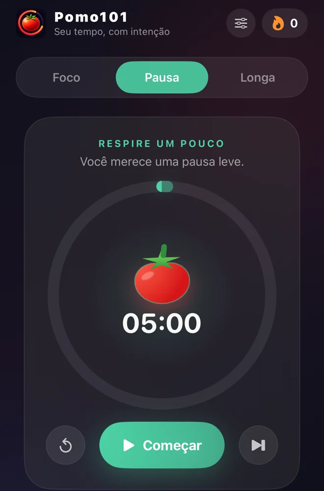

Política de
Privacidade
Suas preferências e seu histórico de sessões ficam no iPhone.
Ver detalhesAtualizada em .
Dados no dispositivo
O Pomo101 guarda no iPhone suas preferências de duração, modo do timer, meta diária e som. O histórico registra o tipo, a duração e o horário de conclusão das sessões.
O app não coleta, transmite, vende ou compartilha dados pessoais. Ele funciona sem conta e não usa ferramentas de análise de uso, publicidade, rastreamento ou serviços de terceiros.
As preferências e o histórico ficam armazenados no iPhone enquanto o app estiver instalado. Para remover esses dados, use a opção Apagar App do iOS.
Avisos do iPhone
Com sua permissão, o iOS emite notificações locais ao final do timer. As Atividades ao Vivo podem mostrar o modo e o tempo restante na Tela Bloqueada e na Dynamic Island, em modelos compatíveis.
Você pode desativar as notificações e as Atividades ao Vivo a qualquer momento nos Ajustes do iPhone, nas opções do Pomo101.

Como apagar os dados
Para apagar as preferências e o histórico deste iPhone, use a opção Apagar App do iOS. A opção Desinstalar App mantém os documentos e dados no dispositivo. Consulte o guia da Apple.
Dúvidas sobre privacidade
Para dúvidas sobre esta política, escreva para alaorjr@icloud.com. Se você enviar um e-mail, seu endereço e o conteúdo da mensagem serão usados para responder ao contato.
Se você abrir um relato no GitHub, o texto e os anexos ficam públicos. Evite incluir informações pessoais.
Ir para o suporte